Cách đổi hoặc chỉnh sửa ngày sinh trên Facebook cực đơn giản

Ty Nguyen
CEO ❤️ AhaChat. Love babies & chatbot.
Khi đăng ký tài khoản Facebook cá nhân, thông tin về ngày tháng năm sinh là phần bắt buộc điền. Nếu chẳng may bạn điền nhầm ngày tháng năm sinh của bản thân hay không muốn bạn bè trên Facebook biết chính xác ngày sinh của mình thì bạn bạn có thể thay đổi chúng. Tuy nhiên không phải ai cũng biết cách thay đổi & chỉnh sửa ngày sinh trên Facebook. Nếu bạn cũng chưa biết cách thay đổi & chỉnh sửa ngày sinh trên Facebook thì đừng bỏ lỡ bài viết dưới đây nhé!
1. Cách đổi & chỉnh sửa ngày sinh hiển thị ở Facebook bằng máy tính
Việc thực hiện thay đổi & chỉnh sửa ngày sinh Facebook trên máy tính cũng không quá khó khăn, bạn chỉ cần thực hiện theo các bước hướng dẫn dưới đây:
Bước 1: Đầu tiên, bạn cần phải đăng nhập vào tài khoản Facebook cá nhân muốn đặt biệt danh thông qua website facebook.com trên trình duyệt web.
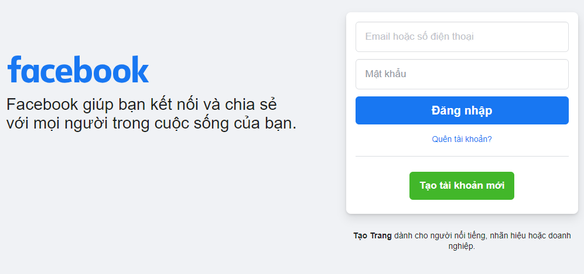
Bước 2: Sau khi đăng nhập vào tài khoản Facebook cá nhân thành công, tại giao diện trang chủ, bạn tiến hành truy cập vào giao diện trang cá nhân bằng cách click chuột vào hình avatar của tài khoản đó.
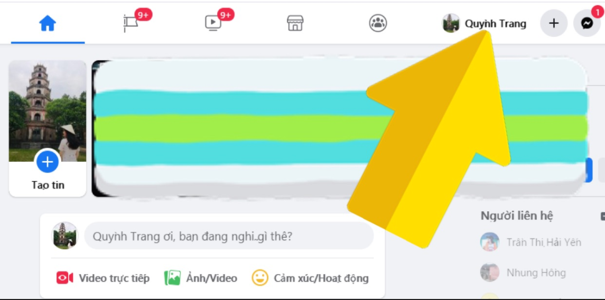
Bước 3: Lúc này, giao diện trang cá nhân xuất hiện, bạn bấm chọn mục Giới thiệu và tìm đến phần Thông tin liên hệ và cơ bản ở menu phía tay trái màn hình máy tính.
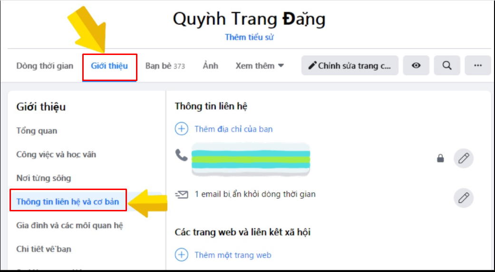
Bước 4: Vào đến phần Thông tin và liên hệ cơ bản, bạn di chuột xuống phía dưới sẽ thấy mục Ngày tháng năm sinh, bạn click vào biểu tượng bút để đổi & chỉnh sửa ngày sinh trên Facebook.
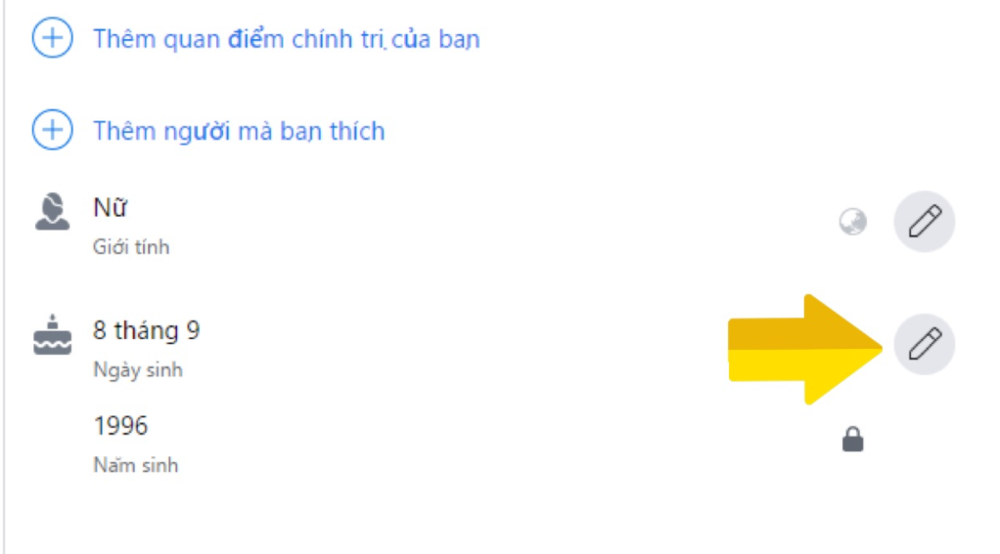
Bước 5: Bạn thay đổi hoặc chỉnh sửa ngày sinh theo ý bạn muốn, sau đó ấn Lưu. Tuy nhiên, số lần thay đổi ngày sinh Facebook cũng có giới hạn nhất định. Vì vậy bạn nên cân nhắc trước khi quyết định đổi & chỉnh sửa ngày sinh, để tránh trường hợp thay đổi ngày sinh không thành công.
Tại đây, ngoài việc chỉnh sửa & thay đổi ngày sinh trên Facebook thì bạn cũng có thể bật, tắt hoặc ẩn thông báo sinh nhật trên Facebook.
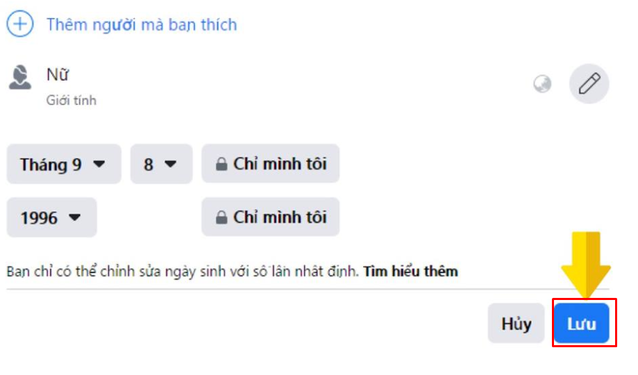
Như vậy là bạn đã thay đổi & chỉnh sửa ngày sinh Facebook bằng máy tính thành công rồi nhé!
2. Cách đổi & chỉnh sửa ngày sinh hiển thị trên Facebook bằng điện thoại
So với thao tác thay đổi & chỉnh sửa ngày sinh trên máy tính thì việc thực hiện trên điện thoại cũng quá khó. Để thay đổi & chỉnh sửa ngày sinh trên điện thoại, bạn thực hiện theo các bước hướng dẫn sau:
Bước 1: Bạn mở ứng dụng Facebook trên điện thoại di động. Ứng dụng Facebook trên điện thoại có biểu tượng chữ “f” màu trắng và nền xanh. Sau đó đăng nhập vào tài khoản Facebook muốn thay đổi & chỉnh sửa ngày sinh.
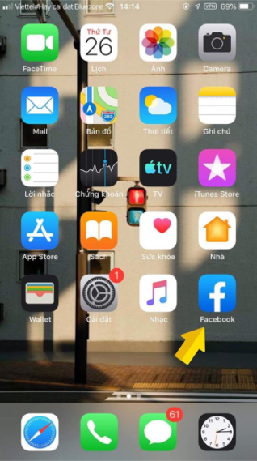
Bước 2: Sau khi đăng nhập, tại giao diện trang chủ, bạn bấm vào biểu tượng 3 gạch ngang ở góc dưới cùng bên phải màn hình và bấm chọn mục Xem trang cá nhân của bạn.
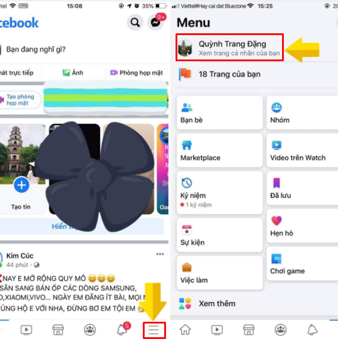
Bước 3: Bạn vào giao diện trang cá nhân, bấm vào dấu 3 chấm sẽ xuất hiện giao diện Cài đặt trang cá nhân, bạn chọn mục Chỉnh sửa trang cá nhân để vào thay đổi & chỉnh sửa ngày sinh.
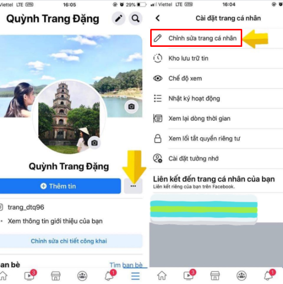
Bước 4: Tiếp theo, tại giao diện chỉnh sửa trang cá nhân, bạn kéo xuống dưới cùng và bấm chọn Chỉnh sửa thông tin giới thiệu.
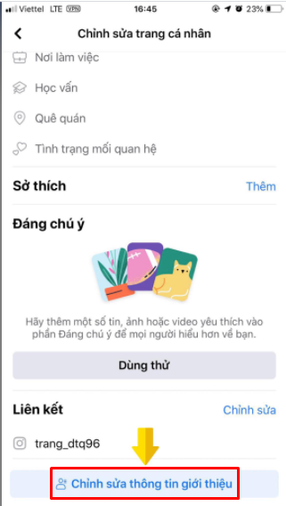
Bước 5: Tại giao diện mục Thông tin giới thiệu, bạn tìm đến mục Thông tin cơ bản và nhấp vào Chỉnh sửa để thay đổi & chỉnh sửa Ngày tháng năm sinh trên Facebook.
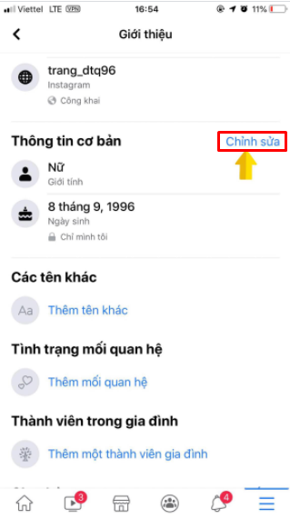
Bước 6: Sau khi bạn nhập vào chỉnh sửa thông tin cơ bản, tại đây sẽ có mục Ngày sinh cho bạn thay đổi & chỉnh sửa. Khi bạn đã thay đổi lại ngày tháng năm sinh, bạn bấm Lưu.
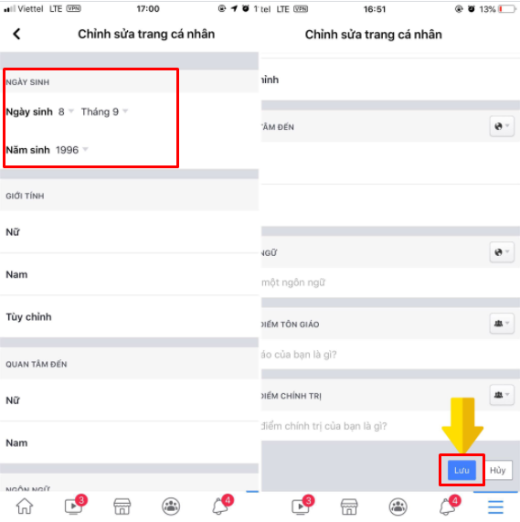
Chỉ với những thao tác cơ bản là bạn đã thay đổi & chỉnh sửa ngày sinh Facebook trên điện thoại thành công rồi nhé.
Bài viết trên đây đã hướng dẫn bạn cách đổi & chỉnh sửa ngày sinh trên Facebook bằng cả giao diện điện thoại và máy tính. Trong quá trình thực hiện nếu có bất kỳ thắc mắc gì, bạn đừng quên để lại bình luận ngay dưới đây để chúng tôi được hỗ trợ bạn nhé. Hy vọng bài viết hữu ích đối với bạn, chúc bạn thành công!